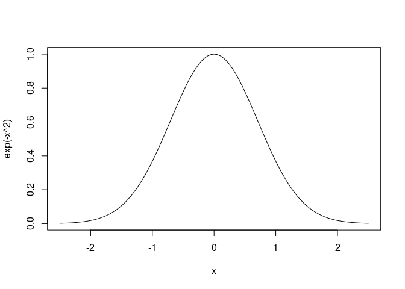

Quotes
I love R and I like writing articles with R Markdown.
Lists
This is a bullet list:
- item 1,
- item 2.
This is an ordered list:
- item 3,
- item 4.
Equations
This is an inline equation with an inline R code chunk: \(\pi = 3.1415927\).
This is the Gaussian integral equation: \[\int_{-\infty}^{+\infty} e^{-x^2}~dx = \sqrt{\pi}.\]
Plots
curve(exp(-x^2), -2.5, 2.5)

This is a nice plot.
Images
- An image from Barry Clark’s GitHub account:
Jekyll Now is the base of this template
- A local image:

Thanks GitHub for hosting my website!